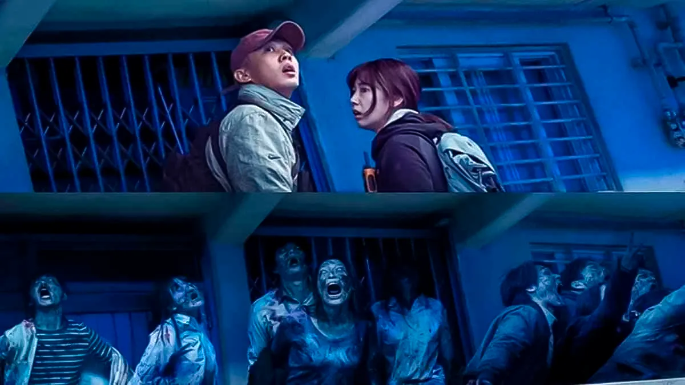
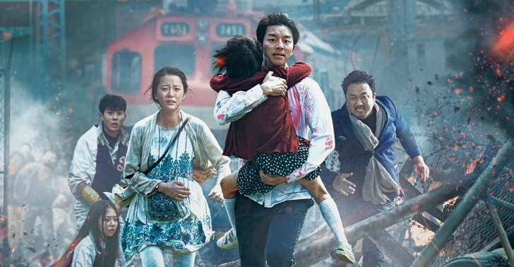
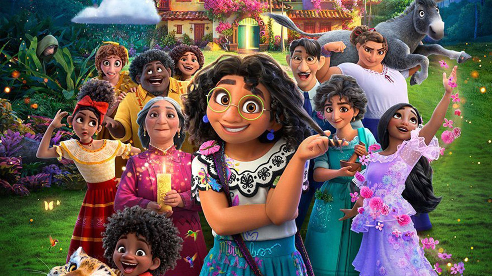
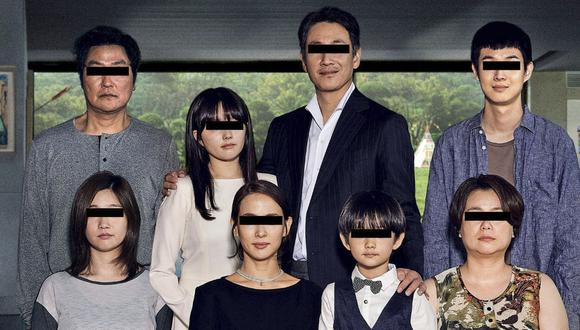

|  | #Vivo Un horrible virus se propaga rápidamente y arrasa una ciudad provocando el caos. Mientras tanto, un joven atrincherado en su apartamento y aislado del mundo digital busca desesperadamente una salida. |
|  | Estación zombie Un brote viral misterioso pone a Corea en estado de emergencia. Sok-woo y su hija Soo-ahn suben al KTX, un tren rápido que une los 442 km que separan Seúl de Busan, una ciudad que se defiende con éxito de la epidemia. Sin embargo, justo en el momento de su partida, la estación es invadida por zombis que matan al conductor del tren y a otros pasajeros. |

| Tus ojos dicen La joven Akari pierde a sus padres y la visión en un accidente. Mientras intenta adaptarse a la nueva rutina, conoce al exluchador Rui, quien ha dejado el mundo criminal. |
| Enola Holmes Enola Holmes, una intrépida joven que busca a su madre, utiliza su brillante instinto investigador para superar a su hermano Sherlock y ayudar a un lord en su fuga. |
|  | Encanto Una joven colombiana puede ser la última esperanza para su familia, cuando descubre que la magia que rodea a Encanto, un lugar encantado que bendice a los niños con dones únicos, se encuentra en serio peligro. |
|  | Parasitos Tanto Gi Taek como su familia están sin trabajo. Cuando su hijo mayor, Gi Woo, empieza a impartir clases particulares en la adinerada casa de los Park, las dos familias, que tienen mucho en común pese a pertenecer a dos mundos totalmente distintos, entablan una relación de resultados imprevisibles. |
Presentado por Diana Carolina Moreno Cárdenas del grado 10-4
Al profesor Rafael Ricardo Mantilla